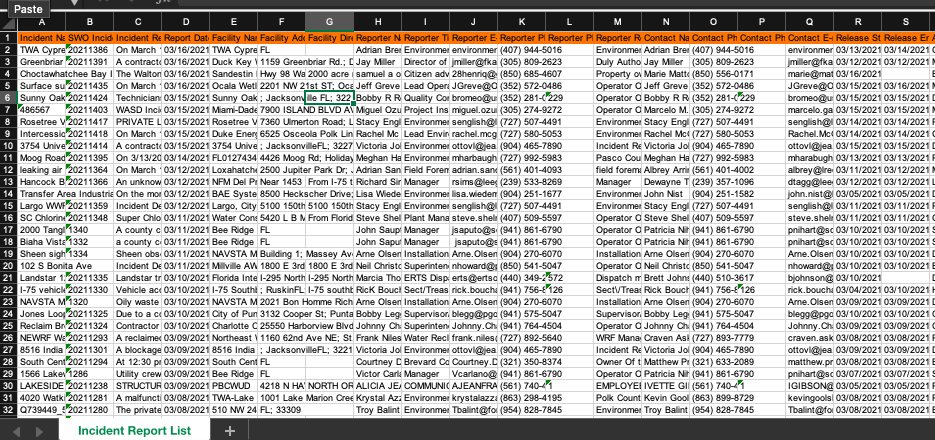
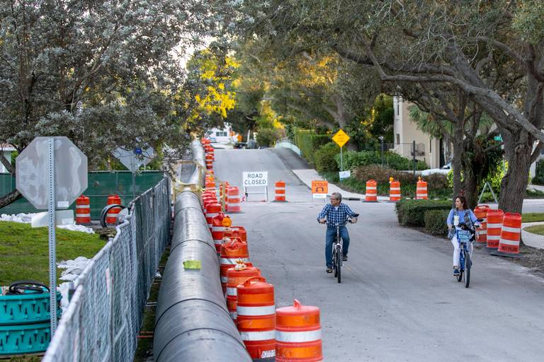
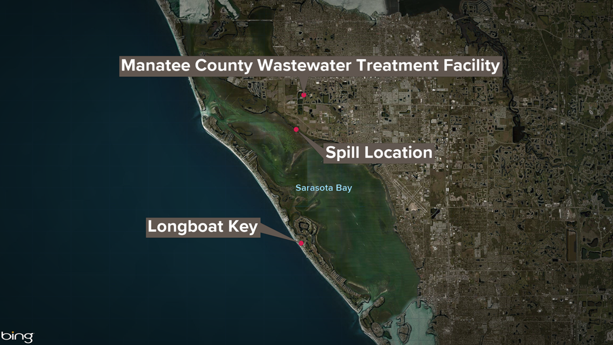
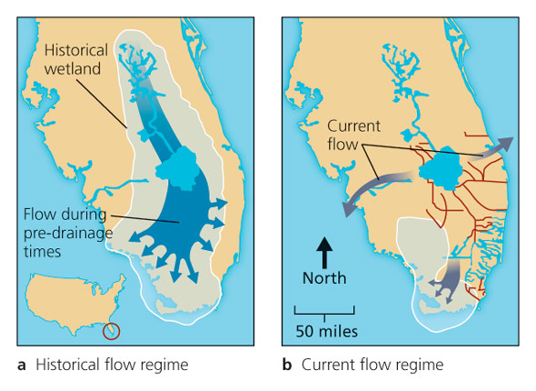
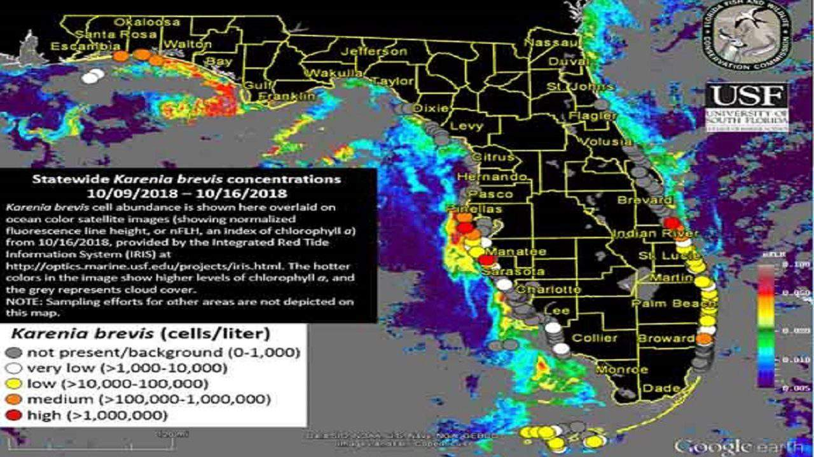
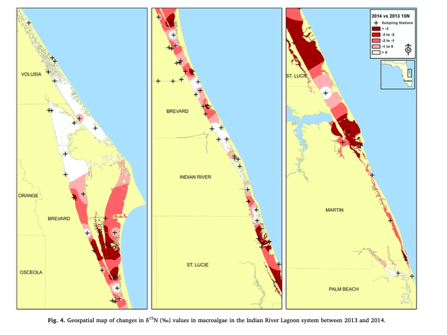
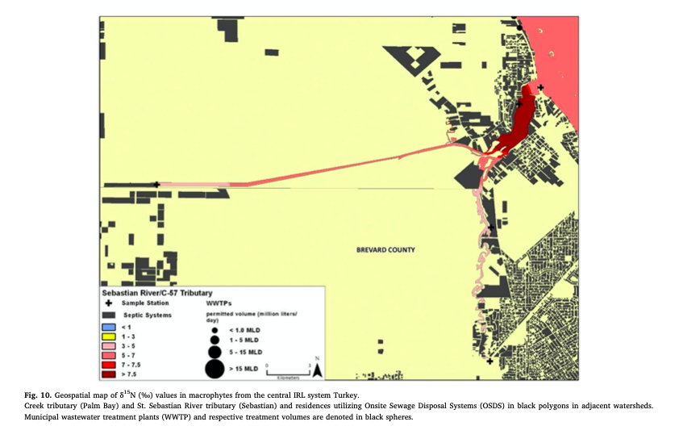
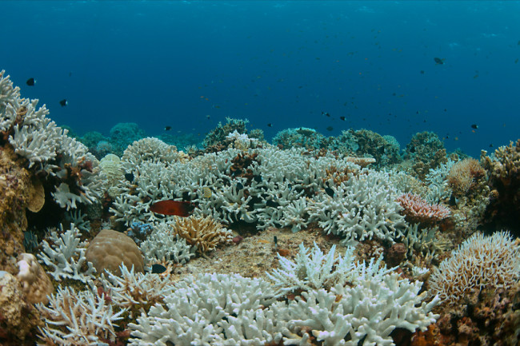

PS Hannon
presentsFlorida Sewage Spills Report
Organizations Supporting Clean Water Rights
By estimates of sewage spilled yearly, Florida is in the state of a crises - from aging infrastructure to insufficient engineering to storm overloads
Unbeknownst to the common Floridian, or tourist, sewage spills are a daily occurrence with a yearly toll of millions of gallons polluting waterways, land areas, and coastlines. Since 2009, there have been over 23,000 reports of sewage spills to the Florida Department of Environmental Protection. In the last 4 years, that number is nearing 6,500 reports.
According to an analysis of state data by Gatehouse Media, these spills released about 1.6 billion gallons of wastewater in the past decade, including more than 370 million gallons of untreated sewage.
Using state-funded data sources in the public domain - visualization can be created to illustrate a clear picture.
Below, you will find an interactive map with up-to-date data points of the past four years from the Florida Department of Environmental Protection. Zoom to survey any particular area of Florida and click pinpoints which display where, when, and how each spill occurred.

To display a further breakdown, below is an interactive graph displaying the amount of sewage spills per county from 2017-2021. Scroll to explore all Florida counties.

For Reference: One instance of a massive sewage spill occurred in Fort Lauderdale, FL from December 2019 - February 2020.
According to the South Florida Sun-Sentinel - “ When aging sewer pipes in the beachside city broke six times, releasing 126.9 million gallons of toxic sewage — one of South Florida's biggest spills ever, according to the South Florida Sun-Sentinel of Fort Lauderdale. The waste poured into streets in three neighborhoods of the popular tourist destination, as well as the Tarpon River and Himmarshee Canal.”

For Reference: A second instance of a similar massive sewage spill occurred in Sarasota County June 2020 when an underwater pipeline carrying raw sewage broke between a Waste Treatment Plant and Longboat Key and leaked for two weeks.
According to a 596-page report by Berkeley Research Group - "One task was to calculate the total leaked volume from a breach in the sewer main pipeline... approximately 14.7 million gallons leaked from the breach"

Why are these spills occurring at such a high rate?
Much of the sewage infrastructure in Florida was built during the mid-20th century, almost 60 years ago - aging pipes and inefficient centralized wastewater plants can’t keep up with demand of over 20 million residents and 130 million annual tourists.
In addition to these shortcomings, these septic systems have to struggle against rising sea-levels, consistent storms, and extreme rains – often caused by warming climates.
In other circumstances, according to the data, not all spills are the result of infrastructure issues - accidents occur caused by construction pipe breaks, equipment failure, fats and grease blocking lines, power outages, and others remain unknown.
A sizable portion of these sewer spills are classified as untreated or raw but the remaining are considered partially treated, reclaimed water, and treated wastewater. Below are descriptions of each.
Untreated spills destroy aquatic ecosystems, threatening human livelihoods, when the associated biological oxygen demand and nutrient loading deplete oxygen in the water to levels too low to sustain life.
Partially treated usually means the toilet paper and solids have been removed but the wastewater has not been fully disinfected. This often contains much of the same bacteria, nutrients, and toxins as untreated. Usually spills occur from overloaded wastewater treatment plants or leaking pipes.
Reclaimed water is typically not as harmful, although it’s not safe to drink, many times not safe to touch. It is used for irrigation as a fertilizer, but utilities must still report when a reclaimed spill occurs. When spills occur the nutrients, sediments, heavy metals, trace pharmaceuticals and bacteria often plague waterway ecosystems.
Treated wastewater has been through the complete cleaning process to become effluent, which is usually discharged back into the environment.
Human Health Concerns
Prolonged exposure to sewage spills via contamination can be lead to numerous health concerns from disease-causing pathogens including bacteria, parasites, fungi and viruses. According to the Environmental Protection Agency, exposure to contaminated water can cause diseases such as: Campylobacteriosis, Cryptosporidiosis, Escherichia coli Diarrhea, Encephalitis, Gastroenteritis, Giardiasis, Hepatitis A, Leptospirosis, Methaemoglobinaemia, Poliomyelitis, Salmonellosis, Shigellosis, Paratyphoid Fever, Typhoid Fever, and Yersiniosis.
These spills not only affect the health of those in contact with contaminated waters but also create widespread health concerns such as statewide algae blooms- which the water, air, and sources of seafood become toxic.
Environmental Concerns
More than 980 million gallons of wastewater from reported spills have entered Florida waterways during the past decade alone. That includes about 220 million gallons of raw sewage, according to DEP data.
The blue-green algae blooms utilizing the nutrients in wastewater and agricultural farm runoff are common occurrences in places like Lake Okeechobee, Palm Beach, and Sarasota Bay, to name a few. These blooms are responsible for mass fish die-offs, killing aquatic plant life by blocking sunlight, and killing aquatic animals by depleting oxygen through decay periods. Warming climates also perpetuate the issue – algae growth increases as heat rises.
When cross-referencing outflows of Lake Okeechobee to sewage spill data points, a direct correlation to nutrient rich waters in association to algae-blooms appears.

East of Lake Okeechobee, the Indian River Lagoon Estuary system has seen over 50% loss of seagrass due to nutrient saturation & eutrophication due to sewage wastewater treatment.
According to 2018 research from Peter J. Barile on the Indian River Lagoon Estuary – “The Indian River Lagoon (IRL) system, a poorly flushed 240 km long estuary in east-central Florida (USA), previously received 200 MLD of point source municipal wastewater that was largely mitigated by the mid- 1990’s. Since then, non-point source loads, including septic tank effluent, have become more important. Seventy sites were sampled for bloom-forming macroalgae and analyzed for δ15N, % nitrogen, % phosphorus, carbon:- nitrogen, carbon:phosphorus, and nitrogen:phosphorus ratios. Data were fitted to geospatial models showing elevated δ15N values (> +5‰), matching human wastewater in most of the IRL system, with elevated en- richment (δ15N ≥ +7‰ to +10‰) in urbanized portions of the central IRL and Banana River Lagoon. Results suggest increased mobilization of OSDS NH4+ during the wetter 2014 season. Resource managers must improve municipal wastewater treatment infrastructure and commence significant septic-to-sewer conversion to mitigate nitrogen over-enrichment, water quality decline and habitat loss as mandated in the Tampa and Sarasota Bays and the Florida Keys. “
δ15N (pronounced "delta fifteen n") or delta-N-15 is a measure of the ratio of the two stable isotopes of nitrogen, 15N:14N.
 In relation to seagrass, Florida’s coral reefs are also feeling the effects of eutrophication and increased loadings of nitrogen + other harmful chemicals, creating a complete imbalance for healthy coral reef species to thrive.
According to researcher Brian LaPointe’s paper “Nitrogen enrichment, altered stoichiometry, and coral reef decline at Looe Key, Florida Keys, USA: a 3-decade study” – “Increased loadings of nitrogen (N) from fertilizers, top soil, sewage, and atmospheric deposition are important drivers of eutrophication in coastal waters globally...Although water temperatures at Looe Key exceeded the 30.5 °C bleaching threshold repeatedly over the 3-decade study, the three mass bleaching events occurred only when DIN:SRP ratios increased following heavy rainfall and increased Everglades runoff. These results suggest that Everglades discharges, in conjunction with local nutrient sources, contributed to DIN enrichment, eutrophication, and increased N:P ratios at Looe Key, exacerbating P limitation, coral stress and decline.”
Solutions to Consider
In regards to the crumbling infrastructure, only one solution stands - replacement, repair, and upgrade. Political leaders in Florida may disregard these issues and keep them out of public discord but the matter isn't disappearing anytime soon and reports will continue to pill up.
Statewide estimates for a complete update to sewage infrastructure could cost hundreds of billions. Fort Lauderdale has proceeded to complete its $65 million project - installing over 50,000 feet of sewage pipeline. In Sarasota County, the utility director estimates a $4 billion project to update and replace all wastewater systems.
Legislative steps need to be enacted although many fall short on making clear policy requirements, which muddies progression on the issue. On June 30th, 2020 - "The Clean Waterways Act" was passed, which aimed at minimizing the impact of known sources of nutrient pollution, realigning the State’s resources to enhance the protection of Florida’s environment, and strengthening regulatory requirements; and although this policy, and others like it, seems sound from the outside, many environmentalist argue it does little to improve sewage spills and waterway pollution.
Sources
“Calculation of Total Leaked Volume From the Town of Longboat Key Sewer Main.” Berkeley Research Group Report, 2020, www.scribd.com/document/488283477/Nov-10-2020-Berkeley-Research-Group-report.
Evidence of sewage-driven eutrophication and harmful algal blooms in Florida's Indian River Lagoon 2015Brian E. Lapointe, Laura W. Herren, David D. Debortoli, Margaret A. Vogel10.1016/j.hal.2015.01.004Harmful Algae
Harris, Alex, and Adriana Brasileiro. “Half the Stuff in Fort Lauderdale’s Sewage System Isn’t Waste. Sea Rise Makes Leaks Worse.” Miami Herald, 9 June 2020, www.miamiherald.com/news/local/environment/article239005633.html.
“National Primary Drinking Water Regulations.” US EPA, 5 Jan. 2021, www.epa.gov/ground-water-and-drinking-water/national-primary-drinking-water-regulations.
The Palm Beach Post. “Point of View: Florida’s ‘Unclean Waterways Act’ Does Little to Clean up Our Waterways.” Palm Beach Post, 5 Dec. 2020, eu.palmbeachpost.com/story/opinion/columns/2020/12/05/point-view-floridas-unclean-waterways-act-does-little-clean-up-our-waterways/3780928001.
“City News | City of Fort Lauderdale, FL.” Fort Lauderdale Gov, 2020, www.fortlauderdale.gov/Home/Components/News/News/3951/16.